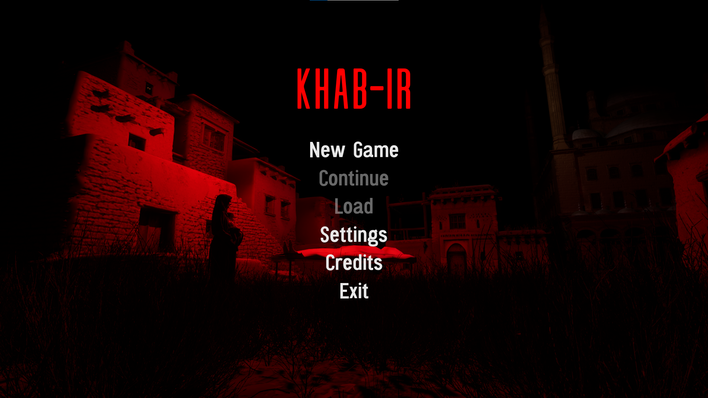
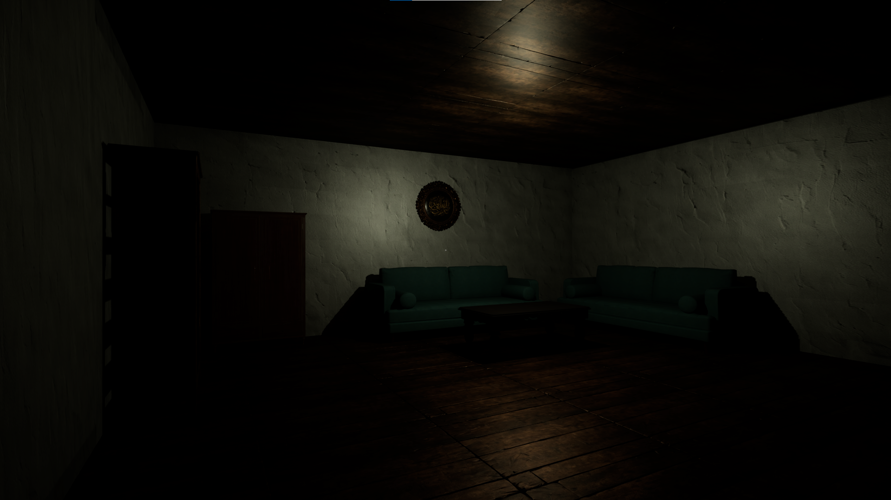
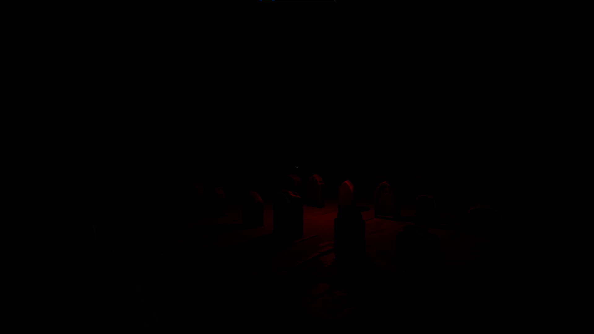
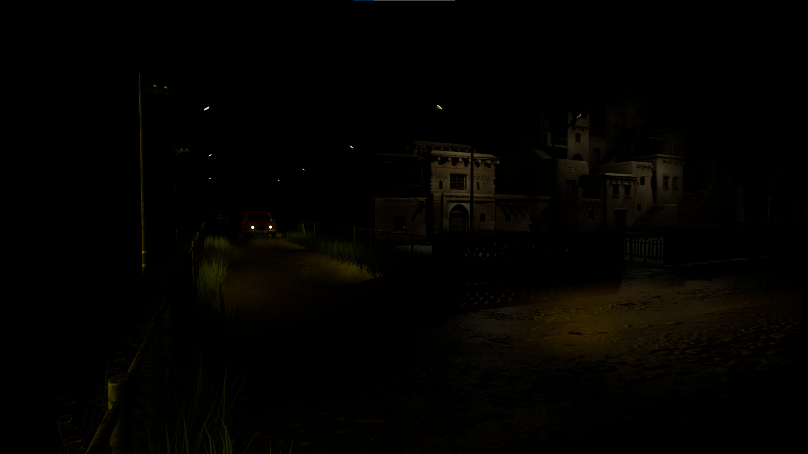

Hüddam
Köyün kenarında kendi halinde yaşayan, cinlerle irtibatlı bir adam. Duyduğu şey karşısında gözyaşlarını tutamadı ve bedenini geride bıraktı.
En iyi deneyim için sesli ortamda incelemeniz tavsiye edilir.
Konya · Anadolu halk hikayesi oyunu
Bir dolunay gecesi dört kişi bozkırda bir çemberin başına toplandı. Şimdi o çemberin altına inen biri var.
Konya bozkırında bir kış. Şehrin konağında zengin bir ailenin tek çocuğu eriyip gidiyor; hiçbir hekim illete ad koyamıyor. Çaresizlik onları dağ köyünün en ücra evine, tılsımlarla yaşayan büyücü Münire'ye götürüyor.
Münire, çocuğun derdinin tıpla değil Khab-ir boyutuyla ilgili olduğunu söylüyor. Şifanın bir bedeli var ve o bedel altınla ödenmiyor. Üvey annesi Serpil'in açgözlülüğü, yetim Maryam'ı o pazarlığın ortasına düşürüyor.
Dolunay gecesi kayalıkta dört kişi vardır: Murat, Yeliz, Serpil ve Münire. Ertesi sabah köy kayıp bir çocuk arar, babası Osman karda günlerce haykırır. Ama o gece olan biten yalnızca köyde duyulmamıştır.
Köyün kenarında yaşayan bir Hüddam'a, irtibatlı olduğu Müslüman cinler ruhlar aleminde çalkalanan haberi getirir. Hüddam gece yarısı eski bir mezara girer, bedenini dünyada bırakır ve tayy-i mekân ile kabir boyutuna geçer. Oynadığın karakter odur: karanlığın ortasında Maryam'ın ruhunu bulmak ve dördünün üzerine çökecek lanetin ilk düğümünü çözmek zorunda.
Khab-ir'de geçirdiğin her an, dünyada bıraktığın bedene borç. Geri dönmenin de bir vakti var.
Murat, Yeliz, Serpil, Münire. Her birinin ahta bir payı, lanette bir düğümü var.
Karanlıkla dövüşülmez. Doğru okunmuş bir söz, bir tılsım ve tayy-i mekân seni ilerletir.
Köyün kenarında kendi halinde yaşayan, cinlerle irtibatlı bir adam. Duyduğu şey karşısında gözyaşlarını tutamadı ve bedenini geride bıraktı.
Doğarken annesini kaybetmiş yetim bir kız. Babası Osman'ın gözbebeği, üvey annesi Serpil'in gözünde fazladan bir boğaz.
Dağ köyünün en ücra evinde, tütsü ve rutubet arasında yaşayan büyücü. Bedelini söylerken tebessüm etti.
Biri evladı için vicdanını, biri feryadıyla kocasının iradesini, biri de bir avuç altın için üvey kızını verdi.





Kabir boyutunun kapısı üç düğümle mühürlü. Her düğümün cevabı bu sayfanın bir yerinde yazılı; hikâyeyi, günlüğü ve cetveli okumadan mühür açılmaz. Üç düğüm çözülünce elinde bir isim kalacak.
Khab-ir tarafında tek bir ışık kaynağı kullanmayı bıraktım. Işık artık duvarlardan sekiyor ve mekân çok daha dar hissettiriyor.
Toplanan dualar ve tılsımlar tek bir defterde birleşiyor, sayfalar el yazısıyla doluyor. Defteri açmak duraklatma değil, oyunun içinde geçen bir an.
Kış gecesinde bozkır kayıtları aldık. Uzaktan gelen köpek sesi ve rüzgârın kayalıkta dönmesi, hazır ses kütüphanelerinden çok daha iyi çalışıyor.
Khab-ir'in ilk oynanabilir bölümü ayakta. Kısa, karanlık ve büyük ölçüde yanlış — ama artık üzerine konuşulacak bir şey var.
Yeni görüntüler, kısa videolar ve yapım notları önce Instagram'da paylaşılıyor.
İçerik uyarısı: Khab-ir kurgusal bir korku anlatısıdır; çocuğa yönelik şiddet, ölüm ve okült ritüel temaları içerir.